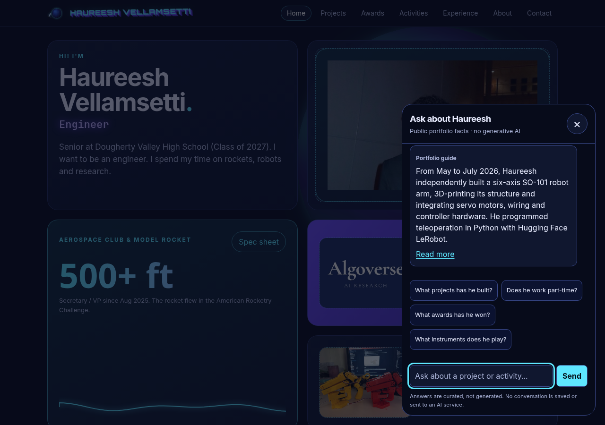
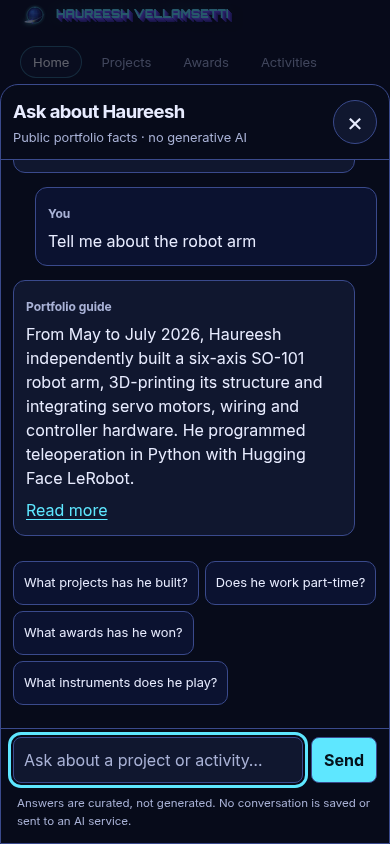

Behind the portfolio guide
Grok — How the chatbot works
A small, grounded guide to Haureesh’s public experience. No language model, backend endpoint or secret API key is used.
Design: familiar, quiet and accessible
The “Ask about Haureesh” button sits at the bottom right on every content page. It opens a conversation panel with starter-question chips, a labeled question field and replies with a “Read more” link to the relevant portfolio page.
On a phone, the panel becomes a full-width bottom sheet with comfortable touch targets. The native modal dialog keeps keyboard focus inside; Escape or the labeled close button closes it and returns focus to the launcher. New replies are announced politely to screen readers.
The widget uses the site’s color variables and inherited typography, so it follows the selected theme. It does not choose or save a theme of its own. Conversations stay only in the current page’s memory; nothing is saved across reloads or sent to an AI service.


Page structure: from interface to evidence
The in-page navigation follows this document’s sections: Design explains the controls and shows the real widget; Page structure explains this reading order; Architecture follows a question through the implementation; Knowledge & privacy lists the sources and exclusions; Limits explains when the guide declines to answer.
Each section has a permanent anchor link. The shared site navigation is unchanged, and the footer links to this guide as a secondary page.
Architecture: retrieval, not generated answers
- 1. Widget frontendA visitor opens the panel and asks a question.
- 2. Curated knowledge
kb.jsonloads from this site on first open. It contains reviewed facts, question variants, tags and local links. - 3. Browser retrievalTokenization, a small synonym map and BM25 rank matching entries. Question-variant similarity helps distinguish topics.
- 4. Confidence gateMinimum coverage, question similarity and ranking thresholds must pass. Sensitive questions are refused before retrieval.
- 5. Answer + linkThe guide returns a stored answer and portfolio link, or honestly says it does not have the information.
Knowledge base sources
- Haureesh Vellamsetti — Profile: the reviewed source of truth for confirmed facts, award names, levels and dates.
- Haureesh’s résumé, version 6: experience and project descriptions, checked against the reviewed profile.
- The portfolio’s overview and detail pages: About, Projects, Activities, Experience, Awards and the home-page journey, including robotics, rocketry, Algoverse, SMASH, tutoring, Vibha, podcasting, piano, orchestra, martial arts and wrestling.
- Verified recognition scans and publication manifest: black-belt certificates, the JV Most Improved plaque, and the undated martial-arts 1st Place plaque. Other recognitions use the reviewed profile’s confirmed wording.
The reviewed profile wins if sources disagree. For example, the guide does not infer a medal level or year for the Presidential Volunteer Service Award, does not turn program participation into an award, and does not claim that an in-progress research paper is published.
What stays out
The knowledge base excludes GPA, test scores, home addresses, contact details, family income and other personal financial information, birthdates and ages, medical information, other minors’ names, school schedules, college application targets and private planning dashboards. It excludes these even when an older source or existing page mentions them.
The source list describes the material used; it does not publish private documents. Search-engine blocking and noindex remain enabled, but those are not access controls: this site and its knowledge base are public.
Limits: say less rather than guess
The guide can explain the robot arm, rocketry, confirmed awards, part-time tutoring, volunteering and music. It cannot browse, invent facts, remember past visits or answer arbitrary questions. It uses no external API and sends no question to a language-model provider.
For a weak match, it says: “I don’t have that info — try the Projects or Awards pages.” For sensitive questions, it explains that it only shares public portfolio experience. A greeting gets a short welcome, not a fabricated biography.
Try the floating button, or explore Projects, Awards and Experience directly.